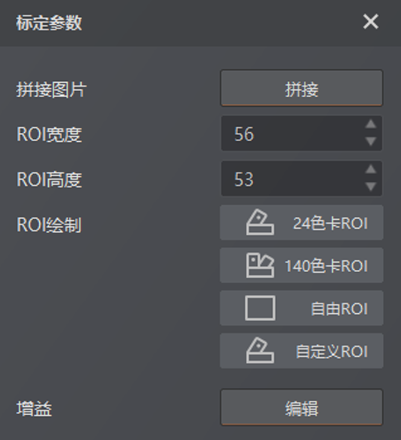
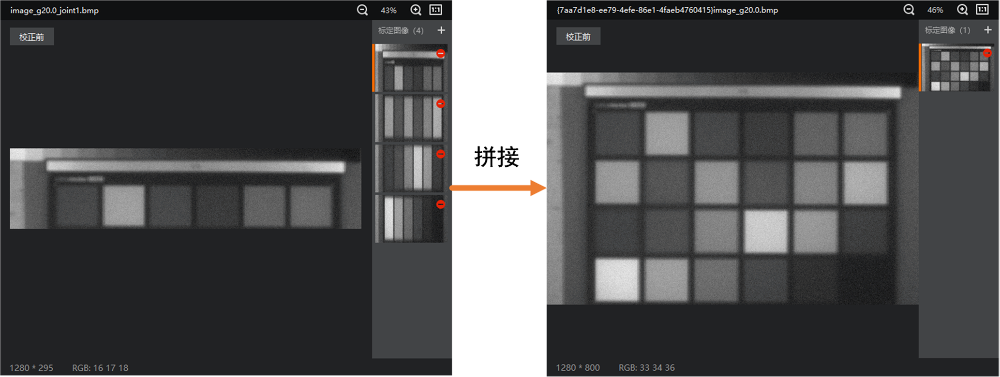
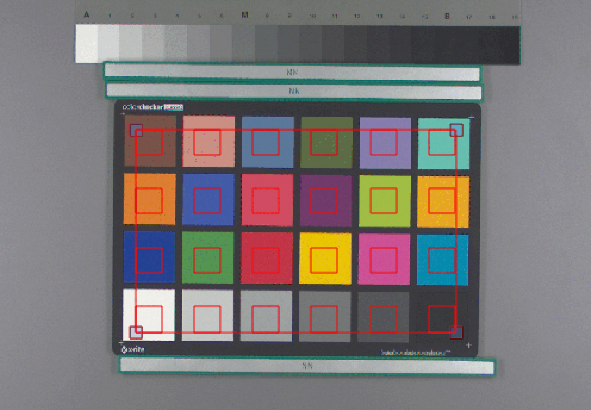
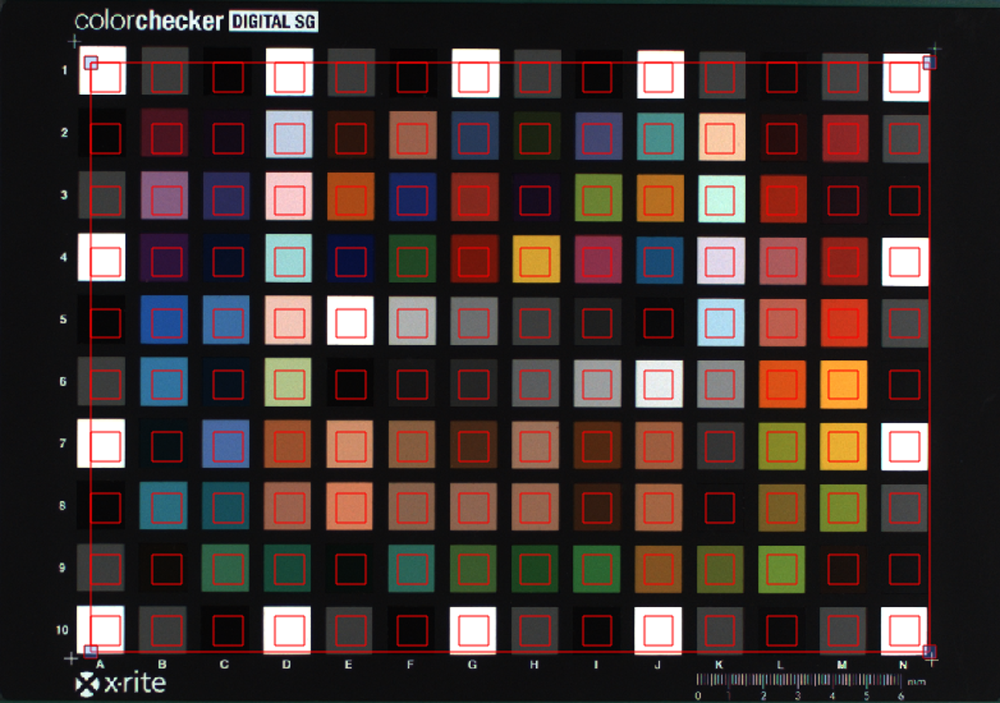
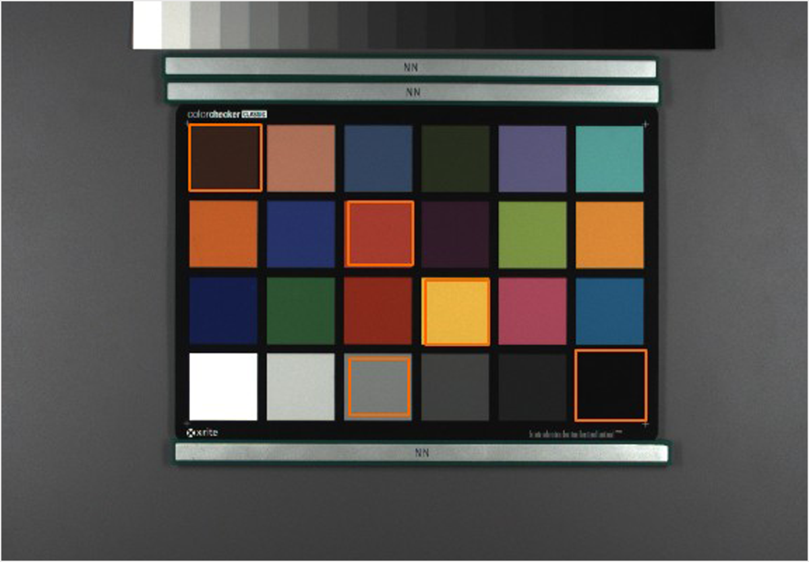
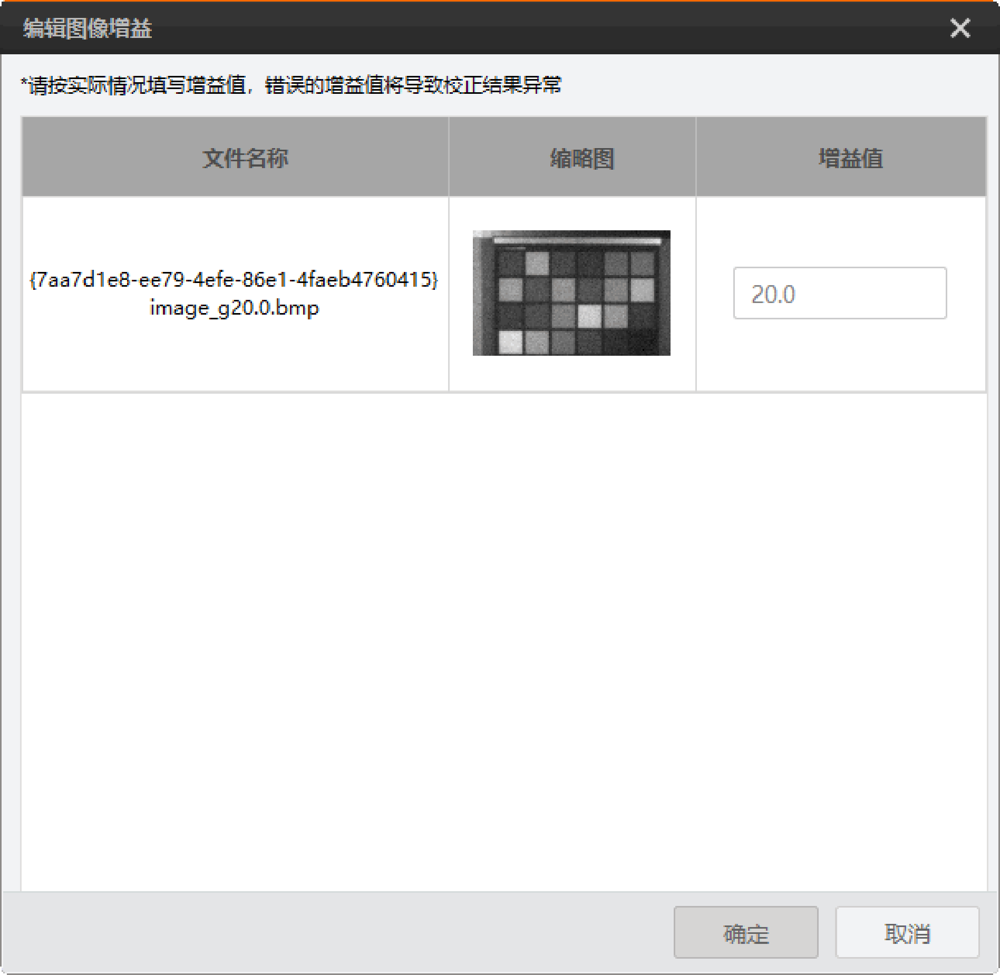
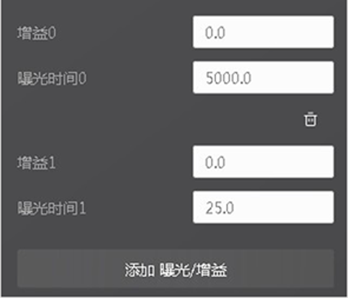
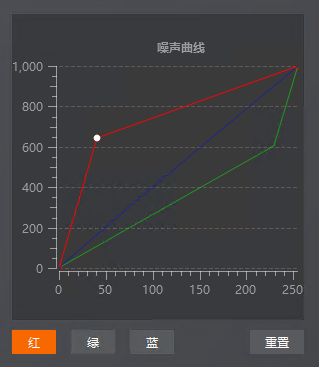
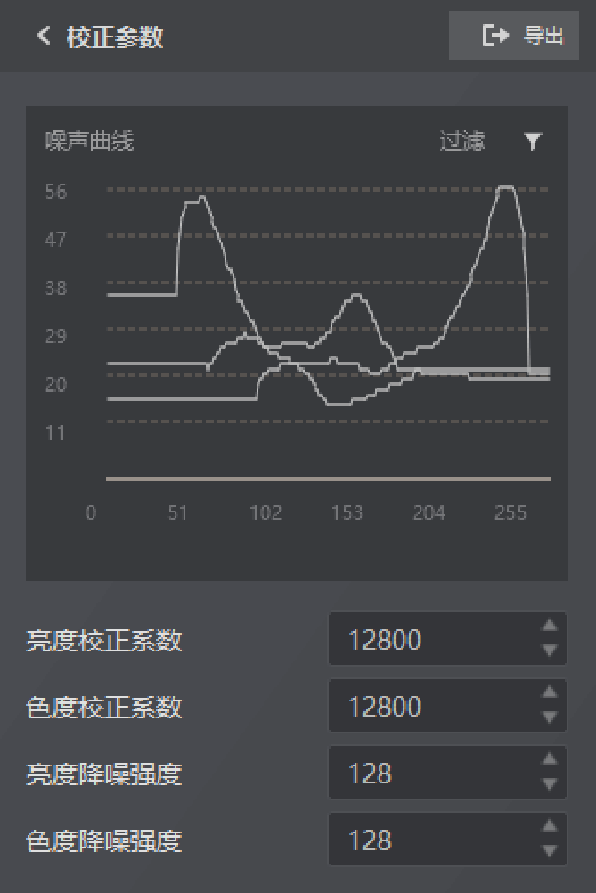

图像降噪
图像降噪算法模块可去除图像中的噪声，提高图像信噪比。
使用降噪模块时需要进行标定和校正。
标定参数
降噪标定支持本地图像标定，也支持相机在线标定。
-
未连接相机状态下，通过单击标定图像右侧的可导入单张或多张本地图像，并依次呈现在图像列表中。
-
连接相机状态下，通过设置多组曝光/增益值，相机将分别采集每组值对应的图像作为标定图像。
降噪标定可对标定图像进行拼接、绘制标定ROI以及设置增益和曝光等。

图 1 降噪标定系数-
拼接图片：对于线阵相机拍摄色卡无移动平台时采集的多张图像，若图像名称符合以下命名规则，点击拼接即可将多张图像拼接成一个完整色卡，如下图所示。
-
BMP图像的默认命名规则：XXX_g增益_joint序号.bmp，如image_g1.2_joint1.bmp。
-
RAW图像的默认命名规则：XXX_g增益_w宽度_h高度_p格式_joint序号.raw，如XXX_g1.2_w1280_h728_pMono8_joint1.raw。

图 2 拼接说明图像列表最多支持导入24张图像，输入图像的宽需一致，图像拼接时为竖向拼接。
-
-
ROI绘制：分为24色卡ROI、140色卡ROI、自由ROI和自定义ROI。
表 1 绘制ROI ROI类型
说明
24色卡ROI
点击24色卡ROI处的后，在预览窗口通过鼠标拖动出大小合适的6(列)*4(行)ROI 阵列。

图 3 24色卡ROI140色卡ROI
点击140色卡ROI处的后，在预览窗口通过鼠标拖动出大小合适的14(列)*10(行) ROI 阵列。

图 4 140色卡ROI自由ROI
点击自由ROI处的后，在预览窗口通过鼠标拖动出大小合适的矩形ROI。每次绘制1个ROI，最多可绘制140个。

图 5 自由ROI自定义ROI
点击自定义ROI处的，输入ROI列数(m)和ROI行数(n)并点击确定后，在预览窗口通过鼠标拖动出一个大小合适的m(列)*n(行) ROI阵列。
-
ROI宽度/高度：可查看或调整单个ROI框的宽度和高度值。
-
增益/曝光：对于本地图像和连接相机，此部分参数设置有所差别。
-
本地图像：单击增益右侧的编辑对导入图像的增益值进行设置。

图 6 编辑图像增益 -
连接相机：通过增益*和曝光时间*设置相机采集标定图像时的增益值和曝光值。
-
若需要使用多张相机图像进行标定，则单击添加 曝光/增益添加多组曝光/增益值，一组曝光/增益值对应一张标定图片。
-
若需要删除已添加的曝光/增益，单击该组曝光/增益值上方的即可删除该组数据。

图 7 曝光/增益参数 -
-
校正参数
校正参数处显示标定后的噪声曲线，当使用多张图像标定时会显示不同增益值的噪声曲线。通过单击过滤 打开弹窗，弹窗中显示不同增益值所对应的曲线，可根据需求对曲线进行显示或隐藏。
打开弹窗，弹窗中显示不同增益值所对应的曲线，可根据需求对曲线进行显示或隐藏。
噪声曲线还可进行手动绘制，根据需求单击红、绿、蓝选择对应曲线，双击曲线增加调整点，拖动调整点即可对曲线进行手动绘制和修改。
-
如需删除调整点，选中对应曲线中需要删除的调整点，使用Delete键即可。
-
如需恢复默认曲线，选中对应曲线后，点击噪声曲线右下方的重置即可。

图 8 绘制噪声曲线Bayer图像、Mono图像和RGB图像的降噪校正参数有所不同。
Bayer图像的校正参数如下：
Mono/RGB图像的校正参数如下：
- 亮度校正系数
-
用于调整亮度噪声曲线的噪声方差值使其与实际图像更匹配，取值范围为[0，12800]。
- 色度校正系数
-
用于调整色度噪声曲线的噪声方差值使其与实际图像更匹配，取值范围为[0，12800]。
- 亮度降噪强度
-
决定亮度降噪图像与原始图像的融合程度，取值范围为[0，128]。设置数值越大，亮度降噪越强。
- 色度降噪强度
-
决定色度降噪图像与原始图像的融合程度，取值范围为[0，128]。设置数值越大，色彩降噪越强。
当图像为Mono类型时，仅亮度校正系数和亮度降噪强度有效。

图 9 降噪校正参数通过单击校正参数右侧的可将降噪标定文件（bin格式）导出到本地PC。
-
若先进行手动标定并校正，再导出降噪标定文件，此处需选择位宽（可选8位或12位）、导出类型（可选GEV、USB和全部），并选择目标路径。
-
若先导入本地参数进行校正，再导出降噪标定文件，此处需选择位宽（可选8位或12位）并选择目标路径。
若图像为RGB类型，则仅支持导出8位GEV标定文件。